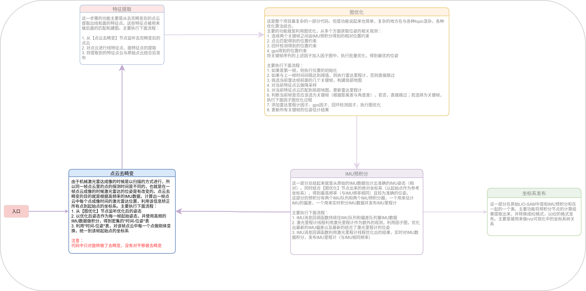
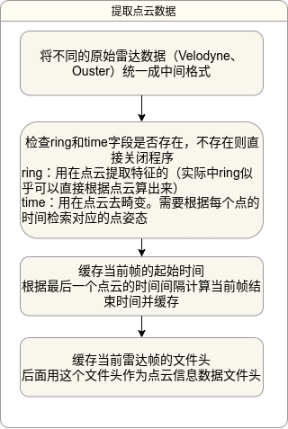
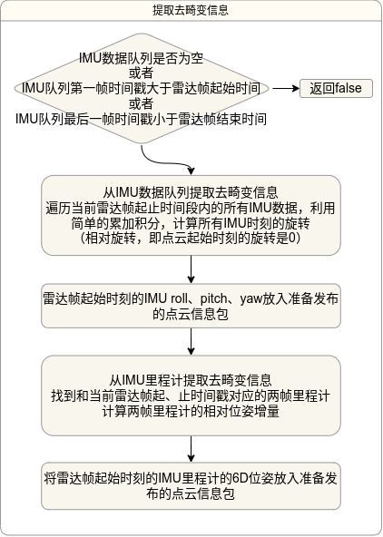
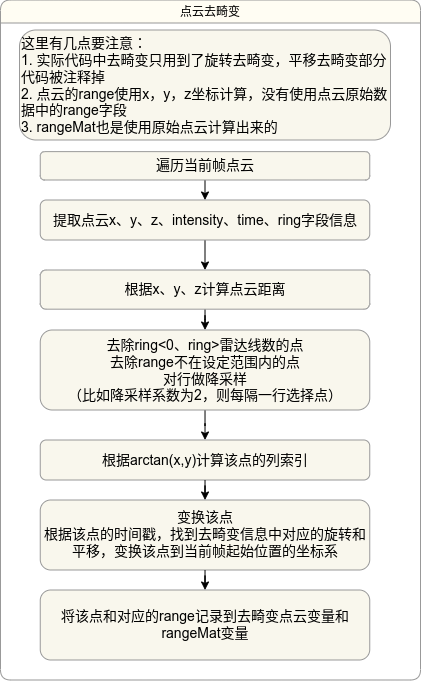

Simple-LIO-SAM——点云去畸变模块
- ⭐ Zeal's Blog
- 🛠 知乎专栏
- 🌀 项目仓库
总述
 点云去畸变模块(imageProjection.cpp文件，文件命名应该是继承了LeGO-LOAM，其实我觉得应该叫做数据预处理模块更合适）主要有以下几个作用
- 去除激光雷达点云的运动畸变
- 检索每一帧点云对应的IMU输出角度、IMU里程计位姿（发布自ImuPreintegration），以便MapOptimization模块用这些信息作为该帧点云的初始位姿
- 转换点云格式，计算
Range字段，方便特征提取模块进行边缘点、平面点提取
总体的流程如下图：
消息订阅及发布

CloudInfo数据类型
经过去畸变的点云通过LIOSAM自定义的数据格式CloudInfo.msg(Simple-LIO-SAM/msg/CloudInfo.msg)发布；特征提取模块也是将特征点放入这个自定义数据格式发布。 1
2
3
4
5
6
7
8
9
10
11
12
13
14
15
16
17
18
19
20
21
22
23
24
25
26
27
28
29
30
31
32
33
34
35
36
37
38
39
40
41
42
43
44
45
46# Cloud Info
std_msgs/Header header
# 在进行点云去畸变时，把range数据展开成一维向量
# ring代表第几条激光线数，比如16线的激光雷达有16个ring
# start_ring_index记录第一个ring在一维向量中的起始索引
# end_ring_index记录第一个ring在一维向量中的结束索引
int32[] start_ring_index
int32[] end_ring_index
# 记录一维的Range数据中每一个点在原始range图片中属于那一个列
int32[] point_col_ind # point column index in range image
# 所有点的range数值，展开为一维数组
float32[] point_range # point range
int64 imu_available
int64 odom_available
# Attitude for LOAM initialization
# 从IMU原始数据获取的roll、pitch、yaw角初值
# 当上面的imu_avaliable为true，odom_available为false的时候，会被用来
# 当作这一帧点云的初值
float32 imu_roll_init
float32 imu_pitch_init
float32 imu_yaw_init
# Initial guess from imu pre-integration
# 从imuPreintegration，IMU预积分模块获取的与这一帧雷达最接近的初始位姿
# 当上面的odom_available标签被置为true的时候会被使用
# 优先级比imu_xxx_init高
float32 initial_guess_x
float32 initial_guess_y
float32 initial_guess_z
float32 initial_guess_roll
float32 initial_guess_pitch
float32 initial_guess_yaw
# Point cloud messages
# 去畸变后的原始点云
# 在经过imageProjection模块后，这个数据字段被填充。在经过特征提取之后这个字段被清空
sensor_msgs/PointCloud2 cloud_deskewed
# featureExtraction模块提取出的点云边缘点
sensor_msgs/PointCloud2 cloud_corner
# featureExtraction模块提取出的点云平面点
sensor_msgs/PointCloud2 cloud_surfacerange信息（也就是点距离雷达的距离）拉成一个一维的数组，即float32[] point_range。 同时，cloud_deskewed里存储的是去完畸变后的点云，里面点的顺序与point_range的顺序是一样的。
cloud_corner和cloud_surface两个字段在imageProjection模块中没有被放置数据。特征提取模块会将边缘点、平面点放置在这两个字段中，同时将cloud_deskewed字段清空。
功能解读
IMU及IMU里程计处理
ImageProjection监听IMU原始数据与从ImuPreintegration发布出来的IMU里程计数据，分别由两个回调函数处理，对于IMU原始数据，只是简单地将其旋转到雷达坐标系后塞入缓存队列。 对于IMU历程计，则是直接塞入缓存队列。
去畸变流程
一句话说明点云运动畸变校正：根据每一帧点云中每一个点的时间戳，计算该点到该帧点云起始点的旋转平移变换，将每一个点变换到起始点的坐标系。
要注意的是，LIOSAM中对运动畸变校正只做了旋转校正，没有做平移校正。
去畸变流程发生在点云的回调函数中 1
2
3
4
5
6
7
8
9
10
11
12
13
14
15
16
17
18
19
20
21
22
23
24
25
26
27
28
29
30
31
32
33
34
35
36
37
38
39
40
41
42
43
44// imageProjection::cloudHandler
/** 原始雷达点云话题的回调函数，实际上真正做点云处理的函数
* 实际处理流程是单线程流水线式处理，这个函数后面的所有函数都是为这个函数服务，因此需要了解
* 点云去畸变的流程。
* 订阅原始lidar数据
* 1、转换点云为统一格式，提取点云信息
* 1）添加一帧激光点云到队列，取出最早一帧作为当前帧
* 2) 计算起止时间戳，检查数据有效性
* 2、从IMU数据和IMU里程计数据中提取去畸变信息
* imu数据：
* 1) 遍历当前激光帧起止时刻之间的imu数据，初始时刻对应imu的姿态角RPY设为当前帧的初始姿态角
* 2) 用角速度、时间积分，计算每一时刻相对于初始时刻的旋转量，初始时刻旋转设为0
* imu里程计数据：
* 1) 遍历当前激光帧起止时刻之间的imu里程计数据，初始时刻对应imu里程计设为当前帧的初始位姿
* 2) 用起始、终止时刻对应imu里程计，计算相对位姿变换，保存平移增量
* 3、当前帧激光点云运动畸变校正
* 1) 检查激光点距离、扫描线是否合规
* 2) 激光运动畸变校正，保存激光点
* 4、提取有效激光点，集合信息到准备发布的cloud_info数据包
* 5、发布当前帧校正后点云，有效点和其他信息
* 6、重置参数，接收每帧lidar数据都要重置这些参数
**/
void cloudHandler(const sensor_msgs::msg::PointCloud2::SharedPtr laserCloudMsg)
{
// 1、提取、转换点云为统一格式
if (!cachePointCloud(laserCloudMsg))
return;
// 2、从IMU数据和IMU里程计数据中提取去畸变信息
if (!deskewInfo())
return;
// 3、当前帧激光点云运动畸变校正
projectPointCloud();
// 4、提取有效激光点，集合信息到准备发布的cloud_info数据包
cloudExtraction();
// 5、发布当前帧校正后点云，有效点和其他信息
publishClouds();
// 6、重置参数，接收每帧lidar数据都要重置这些参数
resetParameters();
}
提取、转换点云为统一格式 
提取去畸变信息 
这里有几点要注意 1. 从IMU原始数据计算每一时刻的位姿变换用的是近似算法（因为一帧点云成像时间很短，一般小与100ms） 1
2
3
4
5
6
7
8
9
10// 对角度做积分
// 再次强调，对角速度的积分不是简单的角速度乘以间隔时间
// 关于角速度的积分公式可以查阅：https://zhuanlan.zhihu.com/p/591613108
static double timeDiff;
timeDiff = currentImuTime - imuTime[imuPointerCur-1];
imuRotX[imuPointerCur] = imuRotX[imuPointerCur-1] + angular_x * timeDiff;
imuRotY[imuPointerCur] = imuRotY[imuPointerCur-1] + angular_y * timeDiff;
imuRotZ[imuPointerCur] = imuRotZ[imuPointerCur-1] + angular_z * timeDiff;
imuTime[imuPointerCur] = currentImuTime;
++imuPointerCur;
对点云做去畸变处理 
提取有效点云并集合其他信息 这里主要是将经过去畸变处理后记录下来的有效点进行数据转换，并把各种信息填入准备发布的
cloud_info消息中。发布点云